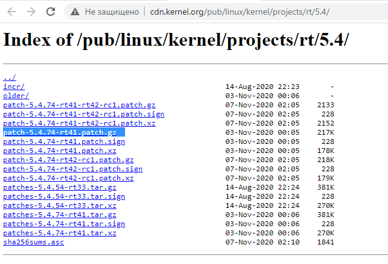

本教程以在 Intel x86_64 上进行干净的 Ubuntu 20.04.1安装为起点。实际内核版本为 5.4.0-54-generic，但我们将安装最新稳定的 RT_PREEMPT 版本。要构建内核，您需要至少 30 GB 的可用磁盘空间。 [6469]
请查看https://wiki.linuxfoundation.org/realtime/start，了解最新的稳定版本。目前是"Latest Stable Version 5.4-rt"。如果我们点击`链接 <http://cdn.kernel.org/pub/linux/kernel/projects/rt/5.4/>`_，我们将得到确切的版本。目前的版本是patch-5.4.78-rt44.patch.gz。 [6470]
我们在我们的主目录中创建一个目录，名称为 [6471]
mkdir ~/kernel
并切换到该目录，使用 [6472]
cd ~/kernel
我们可以使用浏览器访问 https://mirrors.edge.kernel.org/pub/linux/kernel/v5.x/ ，查看该版本是否存在。您可以从该网站下载并手动将其从/Downloads移动到/kernel文件夹中，或者使用wget下载，方法是右键点击链接并选择“复制链接地址”。示例： [6473]
wget https://mirrors.edge.kernel.org/pub/linux/kernel/v5.x/linux-5.4.78.tar.gz
使用以下命令解压缩 [6474]
tar -xzf linux-5.4.78.tar.gz
在 http://cdn.kernel.org/pub/linux/kernel/projects/rt/5.4/ 下载与刚刚下载的内核版本匹配的rt_preempt补丁 [6475]
wget http://cdn.kernel.org/pub/linux/kernel/projects/rt/5.4/older/patch-5.4.78-rt44.patch.gz
使用以下命令解压缩 [6474]
gunzip patch-5.4.78-rt44.patch.gz
然后切换到linux目录，使用命令 [6476]
cd linux-5.4.78/
并使用实时补丁对内核进行补丁 [6477]
patch -p1 < ../patch-5.4.78-rt44.patch
我们只想使用我们的Ubuntu安装的配置，所以我们使用以下命令获取Ubuntu的配置 [6478]
cp /boot/config-5.4.0-54-generic .config
在Ubuntu软件菜单中的“开放软件和更新”中勾选“源代码”框 [6479]
我们需要一些构建内核的工具，使用以下命令进行安装 [6480]
sudo apt-get build-dep linux
sudo apt-get install libncurses-dev flex bison openssl libssl-dev dkms libelf-dev libudev-dev libpci-dev libiberty-dev autoconf fakeroot
为了启用所有的Ubuntu配置，我们只需要使用以下命令 [6481]
yes '' | make oldconfig
然后我们需要在内核中启用rt_preempt。我们调用以下命令 [6482]
make menuconfig
设置以下内容 [6483]
# Enable CONFIG_PREEMPT_RT
-> General Setup
-> Preemption Model (Fully Preemptible Kernel (Real-Time))
(X) Fully Preemptible Kernel (Real-Time)
# Enable CONFIG_HIGH_RES_TIMERS
-> General setup
-> Timers subsystem
[*] High Resolution Timer Support
# Enable CONFIG_NO_HZ_FULL
-> General setup
-> Timers subsystem
-> Timer tick handling (Full dynticks system (tickless))
(X) Full dynticks system (tickless)
# Set CONFIG_HZ_1000 (note: this is no longer in the General Setup menu, go back twice)
-> Processor type and features
-> Timer frequency (1000 HZ)
(X) 1000 HZ
# Set CPU_FREQ_DEFAULT_GOV_PERFORMANCE [=y]
-> Power management and ACPI options
-> CPU Frequency scaling
-> CPU Frequency scaling (CPU_FREQ [=y])
-> Default CPUFreq governor (<choice> [=y])
(X) performance
保存并退出 menuconfig。现在我们要构建内核，这将需要相当长的时间。（在现代CPU上大约需要10-30分钟） [6484]
make -j `nproc` deb-pkg
构建完成后，检查 Debian 软件包 [6485]
ls ../*deb
../linux-headers-5.4.78-rt41_5.4.78-rt44-1_amd64.deb ../linux-image-5.4.78-rt44-dbg_5.4.78-rt44-1_amd64.deb
../linux-image-5.4.78-rt41_5.4.78-rt44-1_amd64.deb ../linux-libc-dev_5.4.78-rt44-1_amd64.deb
然后安装所有内核 Debian 软件包 [6486]
sudo dpkg -i ../*.deb
现在应该已经安装了实时内核。重新启动系统并检查新的内核版本 [6487]
sudo reboot
uname -a
Linux ros2host 5.4.78-rt44 #1 SMP PREEMPT_RT Fri Nov 6 10:37:59 CET 2020 x86_64 xx